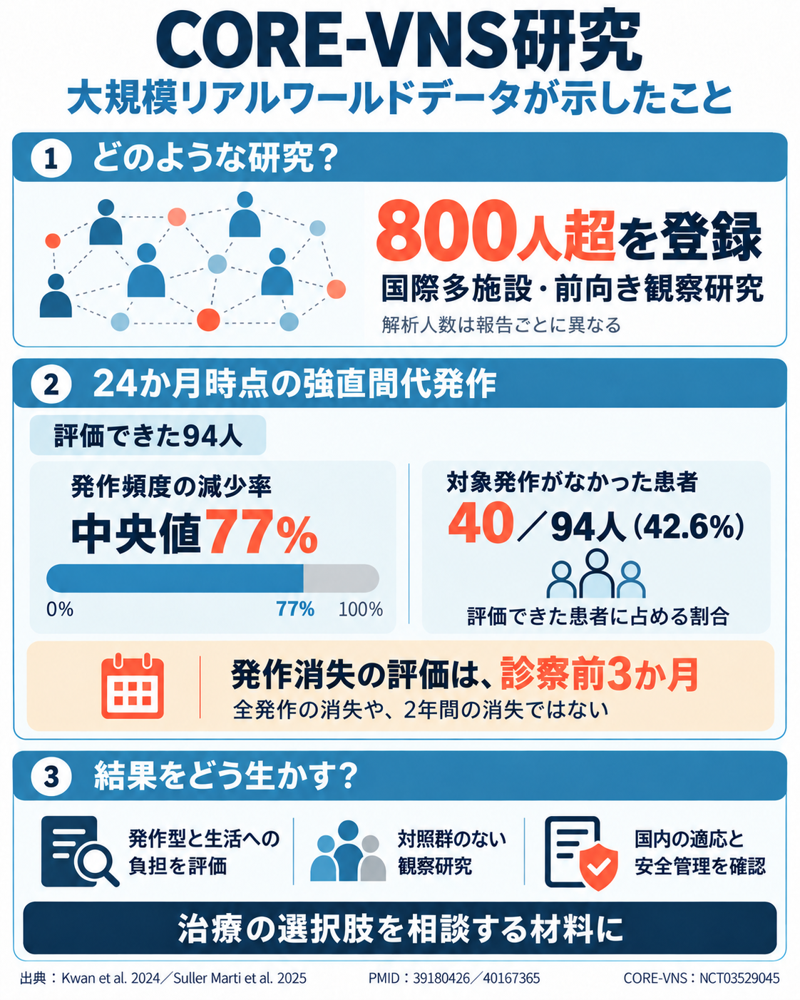

CORE-VNS研究の要旨
大規模な前向き観察研究が示した発作頻度の変化と、結果の解釈で押さえたい点をまとめました。

図の読み方
発作頻度の減少率と、対象発作がなかった患者の割合は異なる指標です。発作消失の評価期間は診察前3か月であり、すべての発作が消えたことや治癒を示すものではありません。800人超は研究の登録規模で、各報告の解析人数とは異なります。
対照群のない観察研究の結果です。治療の検討では国内の適応、安全管理、個々の発作型と生活への負担を確認します。
大規模な前向き観察研究が示した発作頻度の変化と、結果の解釈で押さえたい点をまとめました。

発作頻度の減少率と、対象発作がなかった患者の割合は異なる指標です。発作消失の評価期間は診察前3か月であり、すべての発作が消えたことや治癒を示すものではありません。800人超は研究の登録規模で、各報告の解析人数とは異なります。
対照群のない観察研究の結果です。治療の検討では国内の適応、安全管理、個々の発作型と生活への負担を確認します。